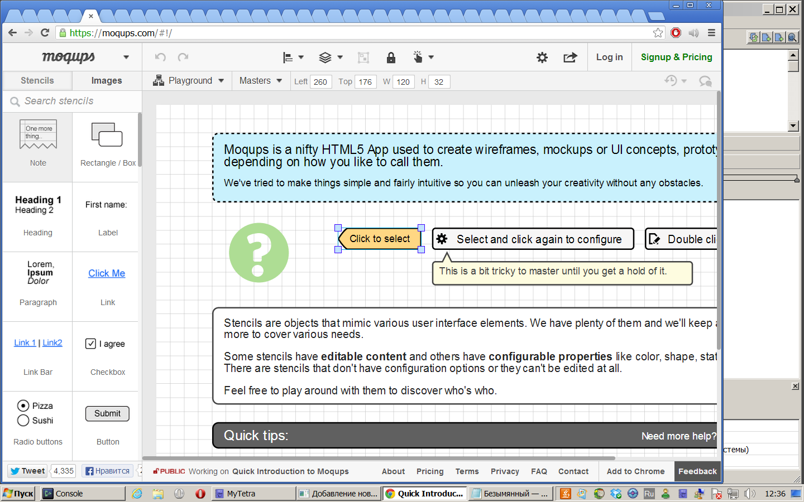

Как обычно проектируете интерфейс?
Инструменты проектирования я часто меняю. В данный момент пользуюсь онлайн сервисом: http://moqups.com

Краткое описание: позволяет нарисовать экранную форму. Можно вместо того чтобы рисовать в Inkscape при составлении ТЗ, можно рисовать экранные формы в этом сервисе. Пока неясно, можно ли запоминать формы, есть ли сохранение в виде картинки, платная ли регистрация, надо разбираться.
А если надо сделать живой прототип, то http://www.invisionapp.com/.